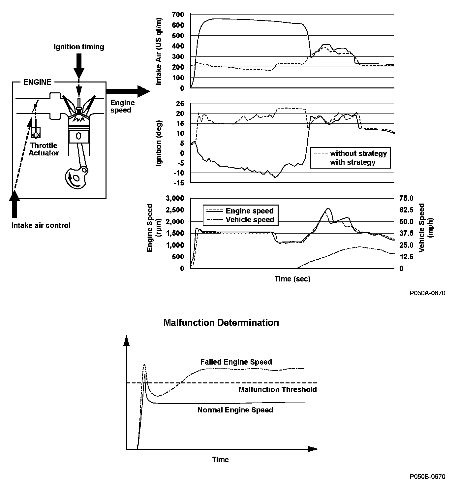
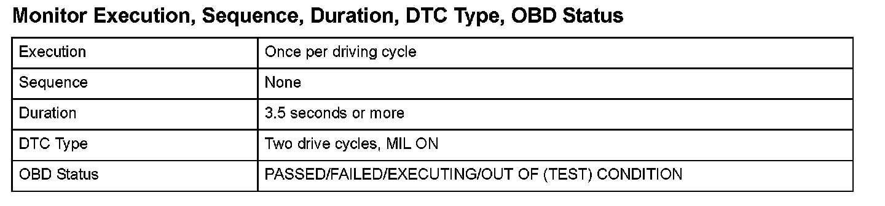
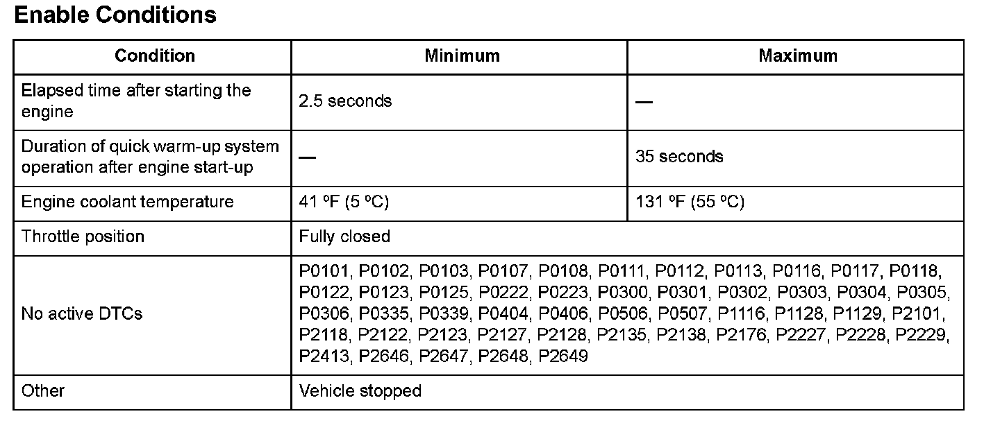

Advanced Diagnostics
DTC P050B: Cold Start Ignition Timing Performance Problem
General Description
The quick warm-up system supplies additional air and retards the ignition timing when the engine is cold to activate the catalytic converter as quickly as possible.
When the actual engine speed is a specified value or more, and it continues for a specified time, a malfunction is detected and a DTC is stored.

Monitor Execution, Sequence, Duration, DTC Type, OBD Status

Enable Conditions
Malfunction Threshold
The engine speed is 2,100 rpm or more for at least 3.5 seconds.
Confirmation Procedure with the HDS
Do the ETCS TEST in the INSPECTION MENU with the HDS.
Driving Pattern
1. Allow the engine to cool to an ambient engine coolant temperature of 131 °F (55 °C) or less.
2. Start the engine, and let it idle for at least 10 seconds.
Diagnosis Details
Conditions for illuminating the MIL
When a malfunction is detected during the first drive cycle, a Temporary DTC is stored in the PCM memory. If the malfunction recurs during the next (second) drive cycle, the MIL comes on and the DTC and the freeze frame data are stored.
Conditions for clearing the MIL
The MIL will be cleared if the malfunction does not recur during three consecutive trips in which the diagnostic runs.
The MIL, the DTC, the Temporary DTC, and the freeze frame data can be cleared by using the scan tool Clear command or by disconnecting the battery.